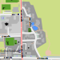

Beach-Volleyballfeld
Position auf der Karte

Das könnte dich auch interessieren
Vereinsheim SV Herzogsägmühle
Tennisplatz
Fußballplatz
Handball- und Basketballfeld
Sprintstrecke
Mehr interessante Orte entdecken
↠Startseite
↠Karte